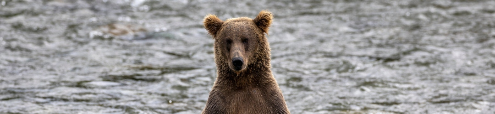
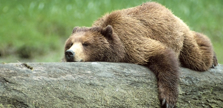

The grizzly bear is a kind of brown bear. Many people in North America use the common name “grizzly bear” to refer to the smaller and lighter-colored bear that occurs in interior areas and the term “brown bear” to refer to the larger and typically darker-colored bear in coastal areas. However, most of these bears are now considered the same subspecies.
In North America there are two subspecies of brown bear (Ursus arctos): the Kodiak bear, which occurs only on the islands of the Kodiak Archipelago, and the grizzly bear, which occurs everywhere else. Brown bears also occur in Russia, Europe, Scandinavia, and Asia.
